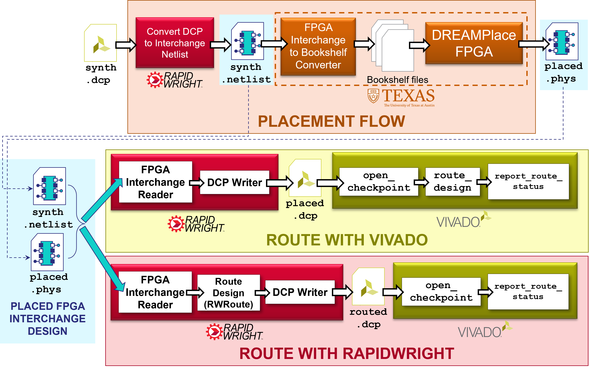
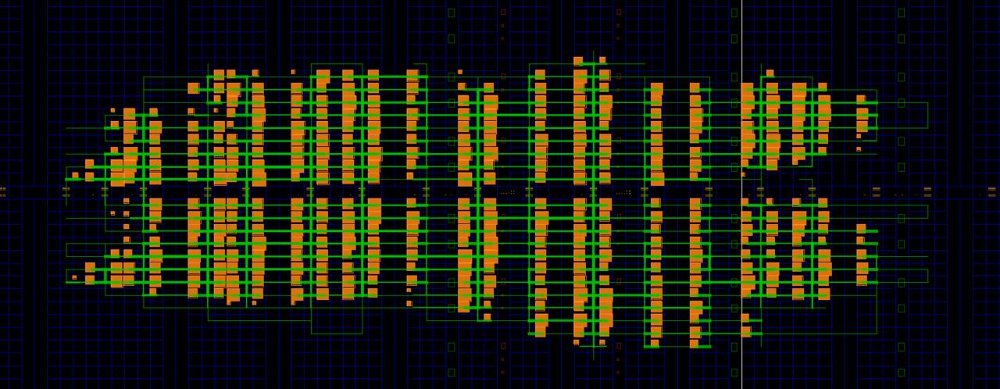
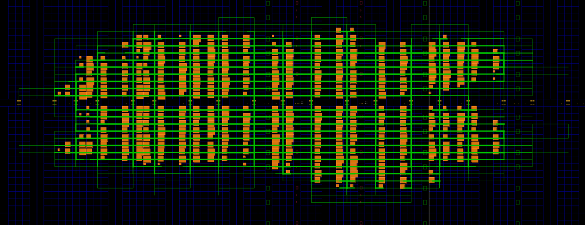

Use DREAMPlaceFPGA to Place a Netlist via FPGA Interchange Format¶
Background¶
DREAMPlaceFPGA is an open source GPU-accelerated placer for FPGAs that uses a deep learning toolkit. It is being developed at the University of Texas at Austin in Dr. David Pan’s research group. DREAMPlaceFPGA has published work demonstrating some compelling placement runtime acceleration compared to other published placers. DREAMPlaceFPGA has also adopted support for the FPGA Interchange Format.
The FPGA Interchange Format (FPGAIF) is a standard exchange format designed to provide all the information necessary to perform placement and routing in an open source context. See FPGA Interchange Format for additional details and resources.
Approach¶
This tutorial will demonstrate how to convert an existing design from Vivado into the FPGA Interchange Format to be placed in DREAMPlaceFPGA. It will then demonstrate how the resulting placed design can be routed either by the router in Vivado or in RapidWright via RWRoute as shown in the diagram below.
{kind=link}
Getting Started¶
1. Prerequisites¶
To run this tutorial, you will need:
RapidWright 2023.1.3 or later
Vivado 2023.1 or later
Attention
If you are using a pre-configured AWS Instance from a
RapidWright hands-on conference event,
DREAMPlaceFPGA has already been setup for you in
~/DREAMPlaceFPGA.
To checkout and build DREAMPlaceFPGA, please see their build instructions. Also see the note here for how to generate an FPGA Interchange device model file. Our notes on the install process for CentOS 7 can be found here: Notes on Setting Up DREAMPlaceFPGA.
2. Getting an example design and converting it to the FPGA Interchange Format¶
For the ease of demonstration purposes in this tutorial, we have
chosen a simple design targeting a VU3P (Virtex UltraScale+ xcvu3p-ffvc1517-2-e). To get started, follow the commands below (alternate
design DCP download link here: gnl_2_4_7_3.0_gnl_3500_03_7_80_80.dcp):
wget http://www.rapidwright.io/docs/_downloads/gnl_2_4_7_3.0_gnl_3500_03_7_80_80.dcp
rapidwright DcpToInterchange gnl_2_4_7_3.0_gnl_3500_03_7_80_80.dcp
This will convert the design checkpoint file into two files:
gnl_2_4_7_3.0_gnl_3500_03_7_80_80.netlist– a logical netlist file in the FPGA Interchange Formatgnl_2_4_7_3.0_gnl_3500_03_7_80_80.phys– a physical netlist (placement and routing information) file in the FPGA Interchange Format
For this tutorial, we are only interested in #1 (the logical netlist) as we will be generating a new implementation with the tools mentioned above.
3. Placing the design with DREAMPlaceFPGA¶
There are a few preparatory steps in order to perform a placement run with DREAMPlaceFPGA. Currently, DREAMPlaceFPGA reads Interchange files by converting them to bookshelf format consistent with the ISPD‘16 contest. Convert the example DCP with the following command:
cd DREAMPlaceFPGA # Or wherever your DREAMPlaceFPGA installation is located
python3 IFsupport/IF2bookshelf.py --netlist ../gnl_2_4_7_3.0_gnl_3500_03_7_80_80.netlist
Next, DREAMPlaceFPGA uses a JSON settings file to configure the
placement run that we need to configure. Here is an example JSON
settings file for our example design (which you can also download
here gnl_2_4_7_3.0_gnl_3500_03_7_80_80.json):
wget -O test/gnl_2_4_7_3.0_gnl_3500_03_7_80_80.json http://www.rapidwright.io/docs/_downloads/gnl_2_4_7_3.0_gnl_3500_03_7_80_80.json
{
"aux_input" : "benchmarks/IF2bookshelf/gnl_2_4_7_3.0_gnl_3500_03_7_80_80/design.aux",
"gpu" : 0,
"num_bins_x" : 512,
"num_bins_y" : 512,
"global_place_stages" : [
{"num_bins_x" : 512, "num_bins_y" : 512, "iteration" : 2000, "learning_rate" : 0.01, "wirelength" : "weighted_average", "optimizer" : "nesterov"}
],
"routability_opt_flag" : 0,
"target_density" : 1.0,
"density_weight" : 8e-5,
"random_seed" : 1000,
"scale_factor" : 1.0,
"global_place_flag" : 1,
"legalize_flag" : 1,
"detailed_place_flag" : 0,
"dtype" : "float32",
"plot_flag" : 0,
"num_threads" : 1,
"deterministic_flag" : 1,
"enable_if" : 1,
"part_name" : "xcvu3p-ffvc1517-2-e"
}
By default, the "gpu" : 0, acceleration option is disabled so the
tutorial is compatible with a greater number of compute
configurations, however, this is an option with a compatible GPU (see
DREAMPlaceFPGA External Dependencies for details). For
a full description of the options available, see Running DREAMPlaceFPGA.
To run DREAMPlaceFPGA with the configuration file, run the following at a terminal:
python3 dreamplacefpga/Placer.py test/gnl_2_4_7_3.0_gnl_3500_03_7_80_80.json
Placement will proceed and may take a few minutes, afterwards a result
new FPGA Interchange physical netlist file will be generated here: results/design/design.phys.
4. Converting the placed design to a DCP and routing it in Vivado¶
Now that the design is fully placed by DREAMPlaceFPGA, we can convert it back to a DCP and open it in Vivado by running the following command:
rapidwright PhysicalNetlistToDcp ../gnl_2_4_7_3.0_gnl_3500_03_7_80_80.netlist results/design/design.phys ../gnl_2_4_7_3.0_gnl_3500_03_7_80_80.xdc placed.dcp --out_of_context
This command will invoke RapidWright to load the logical netlist
(which has not changed) and physical netlist (which now contains the
new placement information) into a placed design checkpoint
(placed.dcp), readable by Vivado. Opening this design in Vivado
will show the resulting placement solution:
vivado placed.dcp &
{kind=link}
By default, the design has all the cells locked (notice the orange
colored cells that have been placed) as this is advantageous for some
implementation flows used by RapidWright. However, the placement can
be unlocked with the Vivado Tcl command lock_design -unlock -level
placement. Also, the command above added the --out_of_context
option to ensure that when the DCP was opened in Vivado, that it
treated it as an out of context implementation and would not
automatically insert buffers on all the top level ports.
Now that the placed design is loaded in Vivado, we can route it by running the following Tcl command in Vivado:
route_design
Afterwards, we should see something like this:
{kind=link}
We can then validate the solution of the route by running:
report_route_status
Which should report something similar to this:
Design Route Status
: # nets :
------------------------------------------- : ----------- :
# of logical nets.......................... : 4937 :
# of nets not needing routing.......... : 898 :
# of internally routed nets........ : 748 :
# of implicitly routed ports....... : 150 :
# of routable nets..................... : 4039 :
# of fully routed nets............. : 4039 :
# of nets with routing errors.......... : 0 :
------------------------------------------- : ----------- :
The key metric to look for is the last one to ensure there are 0 nets with routing errors.
As an alternative to Vivado, we can also use RWRoute (the main router in RapidWright) to route the design–showing how the FPGA Interchange Format allows placement and routing to happen in different open source tools on the same design.
5. Routing the placed solution with RWRoute in RapidWright¶
If we return to the placed solution of our design generated by
DREAMPlaceFPGA, we can take another path through RapidWright to have
it routed by its main router, RWRoute. To load the FPGA Interchange
design files in RWRoute, we need to have the .netlist and
.phys files in the same directory with the same root name. We can
accomplish this by simply copying the files over and invoking RWRoute:
cp ../gnl_2_4_7_3.0_gnl_3500_03_7_80_80.netlist .
cp results/design/design.phys gnl_2_4_7_3.0_gnl_3500_03_7_80_80.phys
rapidwright RWRoute gnl_2_4_7_3.0_gnl_3500_03_7_80_80.phys rwroute_routed.dcp --nonTimingDriven --outOfContext
The last rapidwright command will accomplish 3 things:
Load the existing FPGA Interchange placed result from DREAMPlaceFPGA into RapidWright
Route the design using RWRoute (non-timing driven mode)
Once routing is complete, it will export a routed design checkpoint called
rwroute_routed.dcp. The--outOfContextoption is added since the example design’s top level ports do not connect to IOBs and allows Vivado to import the design without inserting buffers.
6. Validate the RWRoute routing solution in Vivado¶
We can open the routed DCP from RWRoute by running the following in our existing Vivado Tcl prompt:
open_checkpoint rwroute_routed.dcp
The result should look similar to the solution below:
{kind=link}
We can similarly validate the routed solution with Vivado by running the Tcl command:
report_route_status
Which should produce an identical one as to that shown above for the Vivado routed solution:
Design Route Status
: # nets :
------------------------------------------- : ----------- :
# of logical nets.......................... : 4937 :
# of nets not needing routing.......... : 898 :
# of internally routed nets........ : 748 :
# of implicitly routed ports....... : 150 :
# of routable nets..................... : 4039 :
# of fully routed nets............. : 4039 :
# of nets with routing errors.......... : 0 :
------------------------------------------- : ----------- :